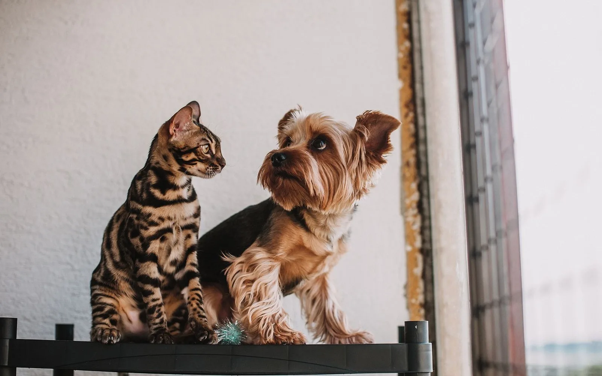
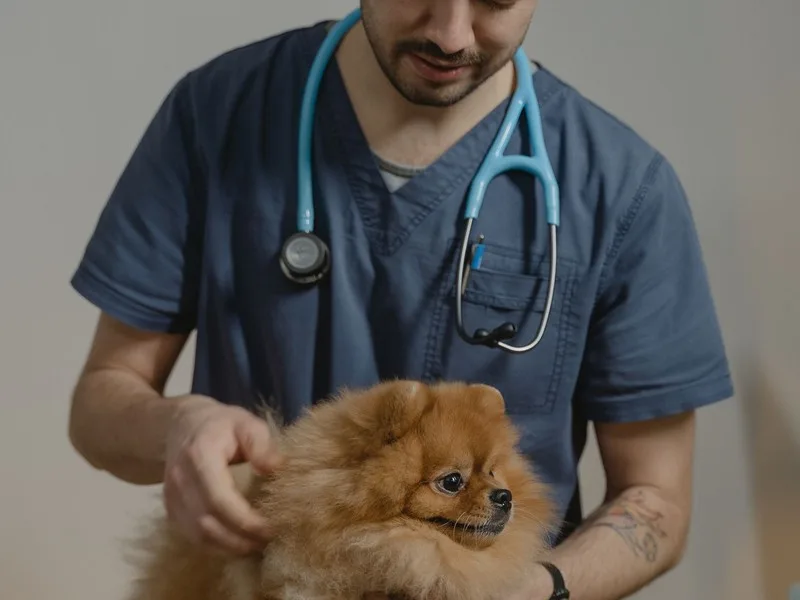
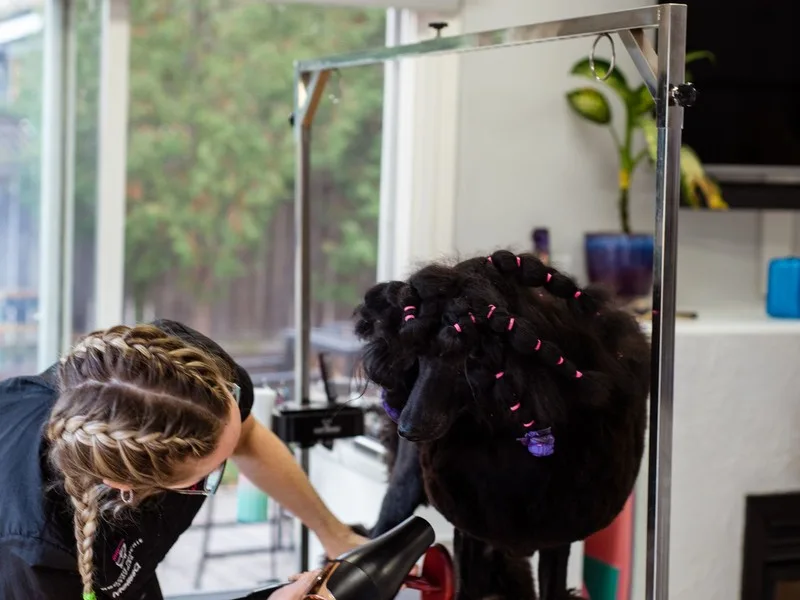

Más solicitado
Consulta general
Evaluación completa, signos vitales y un plan de cuidado claro para tu mascota.
Clínica veterinaria en Los Ruices, Caracas
Consulta, vacunas, cirugía y peluquería en un solo lugar. Emergencias 24/7, precios claros y un equipo que te explica cada paso.

Horario
Lun a vie: 8:00 a 19:00
Sábado: 8:00 a 14:00
Dirección
Av. Francisco de Miranda, Torre Country, local 3, Los Ruices.
Emergencias
24 horas, todos los días.
+58 412 555 0198
Servicios destacados
Cada servicio muestra su duración y un precio referencial en dólares, con la equivalencia en bolívares a la tasa BCV del día.
Evaluación completa, signos vitales y un plan de cuidado claro para tu mascota.

Esquema completo y refuerzos con registro digital y recordatorio de la próxima dosis.

Baño, corte y cuidado de piel con productos hipoalergénicos y manejo tranquilo.
Por qué Patitas Felices
Somos una clínica de Los Ruices que atiende como si cada mascota fuera la propia. Sin letra pequeña y sin vueltas para pedir ayuda.
Atendemos urgencias 24/7 con teléfono y WhatsApp directos. Si hay riesgo de vida, no esperes a llenar un formulario.
Cada servicio muestra su precio referencial en USD y la nota de equivalencia en Bs a tasa BCV del día.
Diagnóstico, opciones y costos en lenguaje sencillo. Preguntar no cuesta y siempre tienes la última palabra.
Vacunas, controles y próximas fechas en Mis mascotas, sin depender de una carpeta que se pierde.
Quiénes te atienden
Cuatro especialidades y una misma forma de trabajar: escuchar, explicar y acompañar. Desliza o usa las flechas para conocerlos.

Directora médica · Medicina interna
Le gusta llegar al diagnóstico con preguntas y observación. Acompaña los casos crónicos con planes realistas para la familia.

Cirugía y traumatología
Explica el procedimiento paso a paso y coordina la recuperación con controles claros. Prioriza el manejo del dolor en cada etapa.

Medicina felina y conducta
Trabaja con manejo de bajo estrés y tiempos de espera cortos. Ayuda a entender los cambios de conducta de los gatos.

Dermatología y peluquería clínica
Distingue entre un problema de piel y un detalle de estética. Recomienda productos suaves y rutinas de cuidado en casa.
Testimonios
Historias breves de quienes llegaron con una duda y se quedaron con un plan claro.
“Miga amaneció decaída un domingo y me respondieron por WhatsApp en minutos. El lunes tenía su cita y pagué exactamente el precio que vi en la web.”
“Yo prefiero hablar con una persona. El teléfono está a la vista, me explicaron el precio de Rocky y me dieron la cita sin pedirme una cuenta.”
“Agendé después del colegio y compartí la confirmación con mi esposo por WhatsApp. Bruno tenía su historial de vacunas a mano para la guardería.”
Testimonios ilustrativos del prototipo. Los nombres se muestran solo con la inicial para proteger la privacidad.
Visítanos
Llega con tiempo para una atención tranquila. Si vienes en carro, hay estacionamiento en el edificio.
| Día | Horario |
|---|---|
| Lunes a viernes | 8:00 a 19:00 |
| Sábado | 8:00 a 14:00 |
| Domingo | Solo emergencias |
| Emergencias | 24 horas, todos los días |
Los días feriados atendemos solo emergencias. Llama antes de venir si tu mascota necesita atención urgente.
Si tu mascota tiene dificultad para respirar, convulsiones, sangrado que no se detiene, vómitos repetidos o ingirió algo tóxico, llama de inmediato. No esperes a que empeore.
Agenda en línea
Elige el servicio, cuéntanos sobre tu mascota y reserva en menos de dos minutos. Sin crear una cuenta.